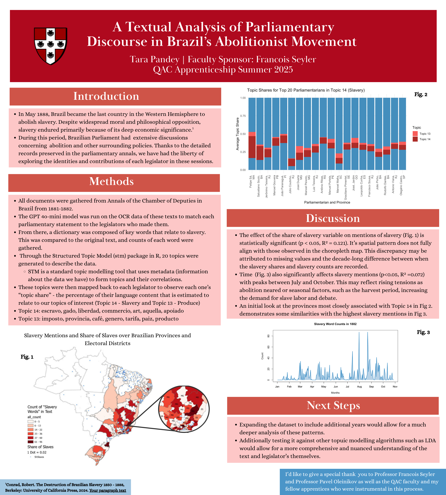
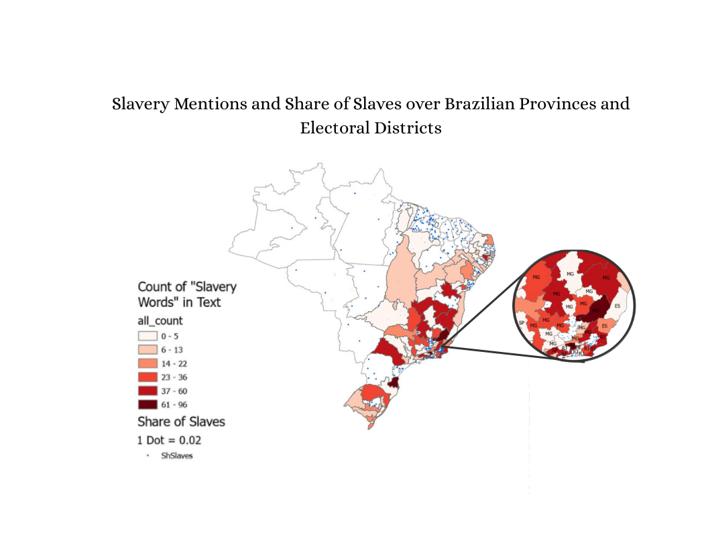
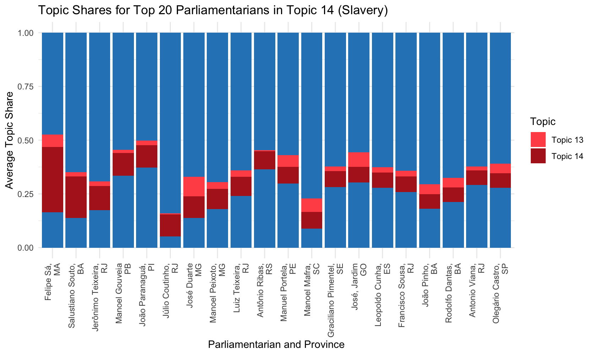
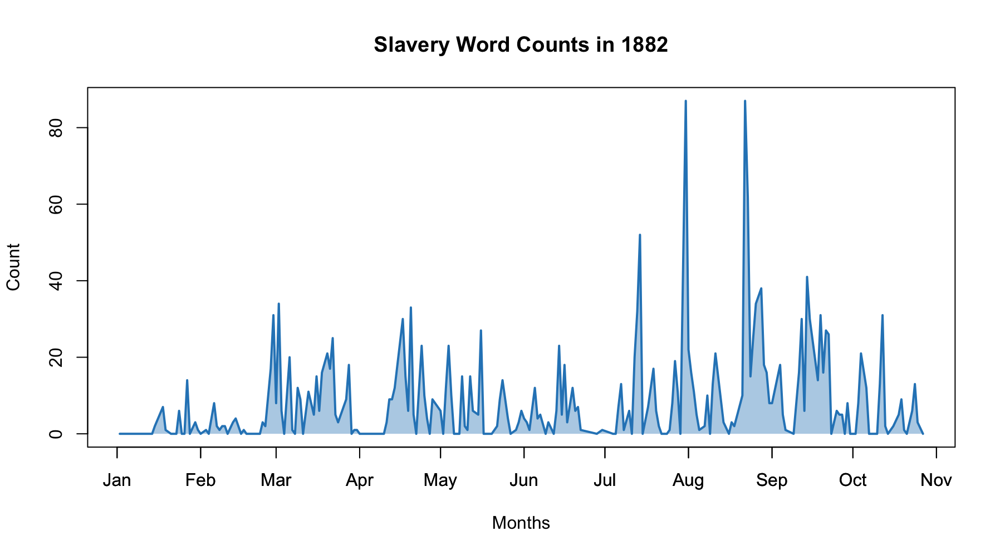
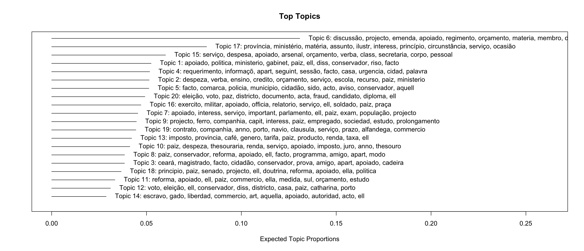

This project is the culmination of my work in the Wesleyan Hazel Quantiative Analysis Center Summer Data Apprenticeship Program. With professor Francois Seyler, I textually analyzed brazilian parliamentary documents for mentions of slavery and related topics. This was an exploratory research study on the perspectives of these parliamentarians, through the lens of identity economics.
In this exploratory analysis, our findings indicated similarities between mentions of slavery and related words and the prevalence of two topics found to be similar with our pattern matching. Additionally, we were able to find statistically significant contributors to slavery mentions by a parliamentarian's district, such as share of slaves.
Once the text data was gathered through the GPT 4o-mini LLM, I generated topics that describe the data, through the Structured Topic Modelling package in R. The topics were then mapped back to the legislators and from there, the top 20 parliamentarians with the largest topic share of topic 14 (labelled as slavery) were displayed. For the GIS map I believed the color scale for count of "slavery words" was most effective and was still visible alongside the share of slave marked in blue dots. I chose this form of bar graph because it highlights topics 13 and 14 very clearly. As for the line graph, I wanted to clearly and concisely display the mentions over time.